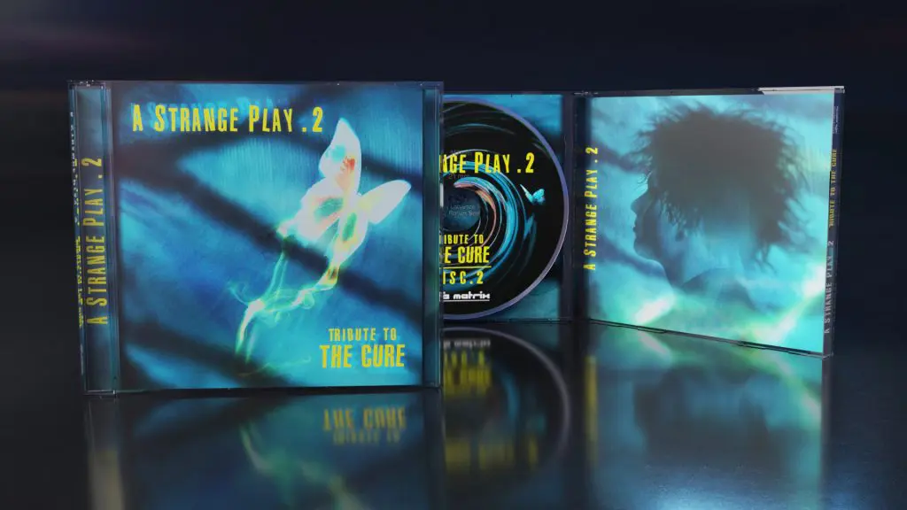

Media Partners Front Line Assembly lanza cover a "Deutschland" de Rammstein, previo al próximo disco tributo 0:00/1× Recién salido de dos giras recientemente completadas por los
Columnas En homenaje al Gótico: La contracultura que sigue no-viva y no-muerta Otras subculturas han surgido y desaparecido. De las modas o "tribus urbanas"
Noticias ¿Till es inocente? En base a informes forenses preliminares, Lituania cierra caso contra Lindemann por abuso sexual dentro del caso "Fila Cero" La fiscalía de Vilna concluyó que no hay meritos para abrir un
Podcast ElClaustro.cl: Programa 17 de Febrero 2010 Emitido por Radio USACH 94.5 FM entre los años 2009-2011, teniendo
Discos y Multimedia RRRRRRR (Gothic Rock, Uruguay) lanza nuevo material llamado "Nictálope" y gestiona futura gira Hablar de RRRRRRR es hablar de la médula del gothic rock uruguayo
Archivo Histórico Damián, Uriel, Charro, o de cómo aprendimos qué era realmente El Claustro (Parte 1: Monterrey y Santiago) Año 2007, recibimos un correo buscando contactarse con nosotros. En ese momento,
Discos y Multimedia The Breath Of Life (goth, coldwave, Bélgica) firma con Spleen+ y presenta single The Breath of Life se formó en 1985 y la banda se
 Media Partners Nueva compilación de 2CD tributo a The Cure a través de Alfa Matrix y Spleen+ con 27 canciones: "A Strange Play (Vol. 2) – Tribute to The Cure" Nueve años después del lanzamiento de su primer tributo a The Cure,
Discos y Multimedia Cadal - Fiesta Nueva Cadal es una banda post punk oriunda de Santiago de Chile, compuesta
Columnas Archivo Histórico El Claustro: Undeads en "Piso Hell" (2007) Año 2007, no teníamos nada más que el darkeo interno que nos
Eventos Cadal (post punk, Chile) lanza "Fiesta Nueva", su primer disco, este jueves 22 de Junio en Bar de Rene 0:00 /0:15 1× @cadalbanda ya habla en serio. Su primer
Noticias Kiepja marcará el inicio del show de Haggard en Chile @kiepjaoficial anuncia en su Instagram que será la banda anfitriona del show